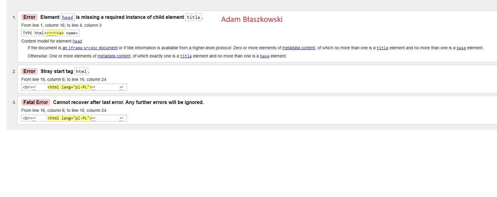
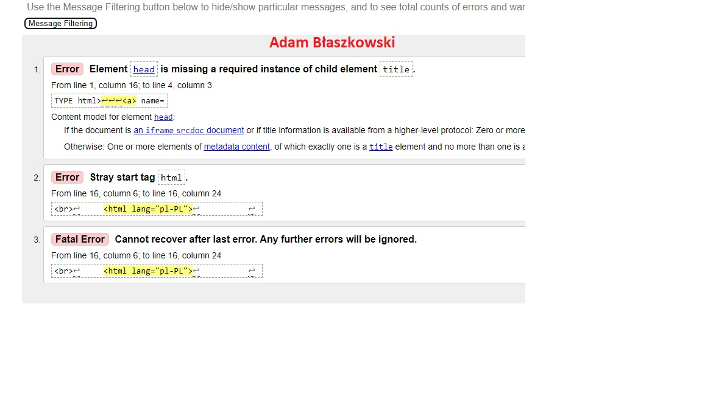

Walidacja jest to proces sprawdzania strony internetowej za pomocą specjalnego programu lub innej strony internetowej pod kątem czy nie ma błędów składniowych.Stronę, którą chcemy sprawdzić wgrywamy do specjalnej profesjonalnej strony, która poda gdzie mamy błęby oraz powody błędów


Wróć